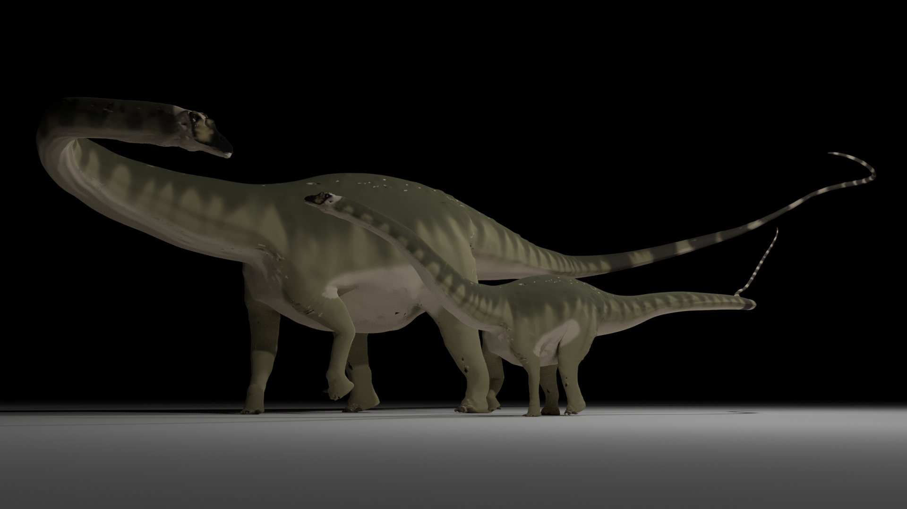
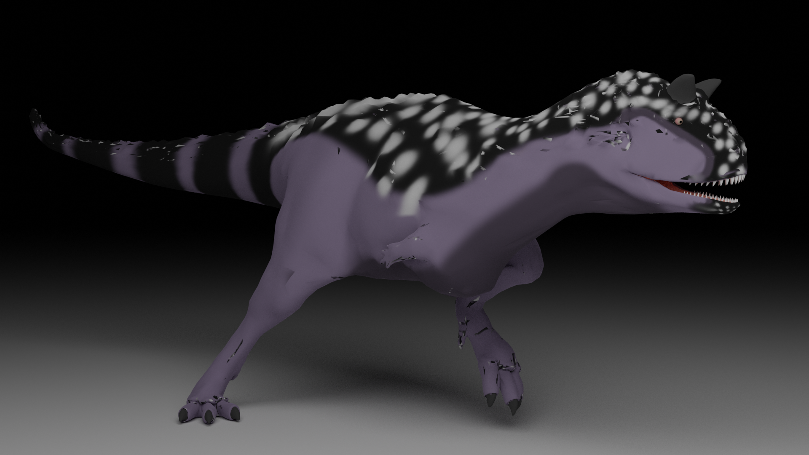
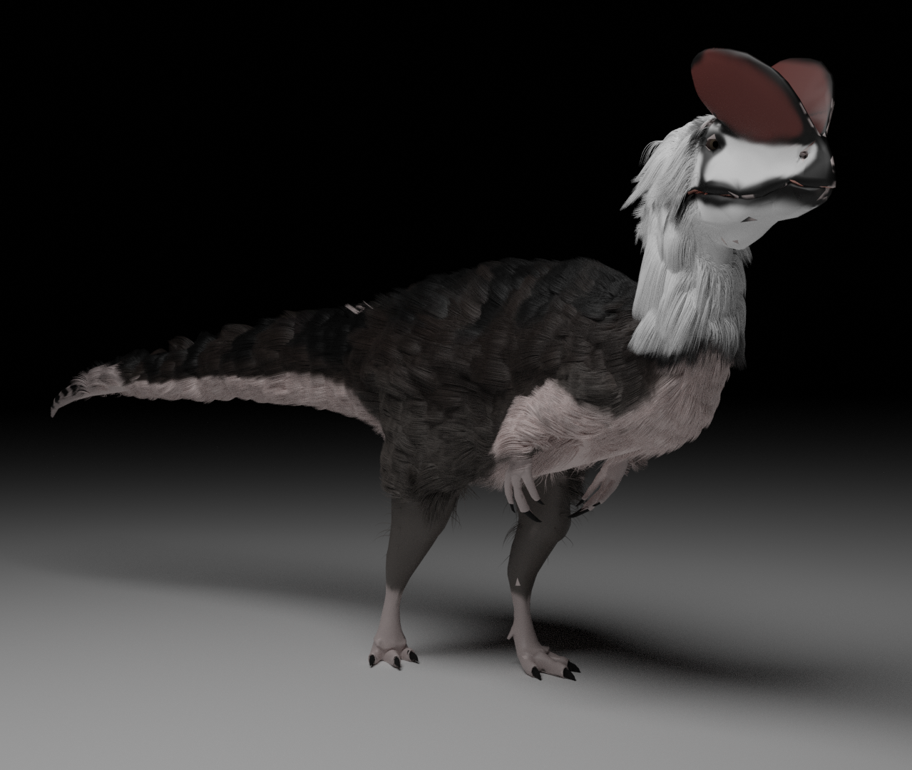
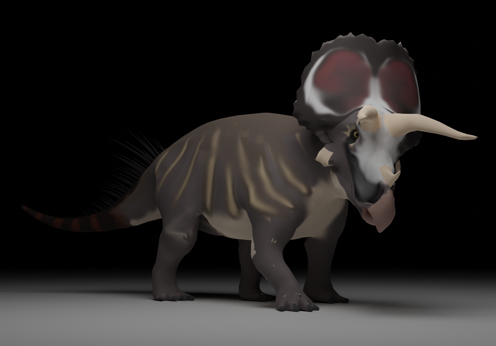
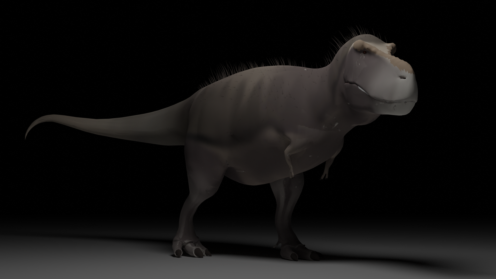

Blender Renders
These are the renders that were made when I finish projects.
Alvim Correa Fighting Machine

A render of the Alvim Correa Fighting Machine from H.G. Wells' "The War of the Worlds" illustrations.
Diplotocus and it's offspring
Two Diplotocus walking together, it's a bit dated by today's standards.
Brachiosaurus Altithorax

A render of a scientifically accurate Brachiosaurus Altithorax.
Carnotaurus Running
A render of well... A scientifically accurate Carnotarus.
Furry Dilophosaurus
A render of an scientifically accurate Diophosaurus, this is a experimental render, as I was testing with hair simulations at the time.
Triceratops Horridus
Triceratops staring at the camera. There was another render before this that had a early version of this trike design.
Tyrannosaurus Rex
"King" of the dinosaurs. There was a much earlier design of this model. It's less scientifically accurate than this one.
Skynoraptisaurus
.png)
A custom-made dinosaur, Skynoraptisaurus. It has scientifically accurate features such as the hands facing each other, and less extreme skin-wrapping. It is mainly based off of Baryonyx